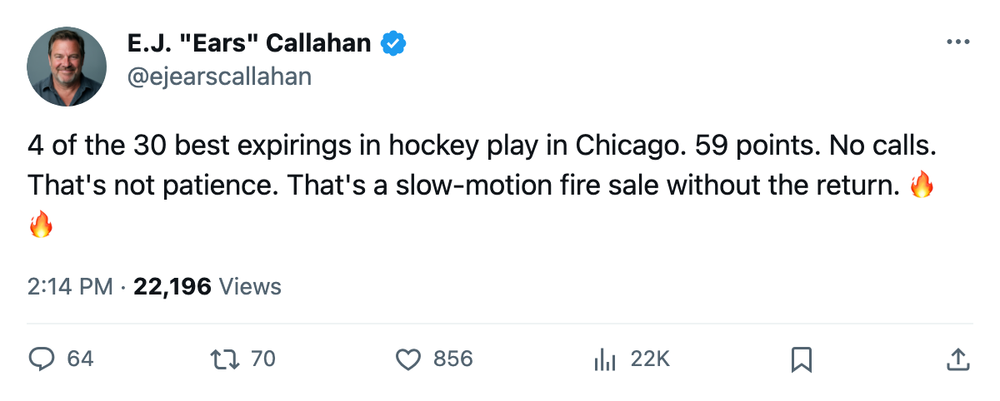
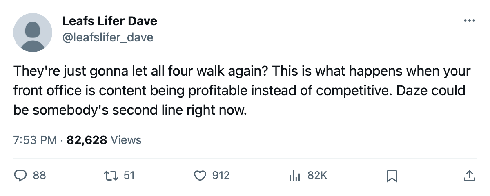

Rental Market: [[team:CHI]] Carries 4 of the League's Best 30 Expirings. 10 Days.
Thibault, Daze, Zhamnov and Sullivan hold 90, 87, 85 and 85 overalls on deals that die in July. Chicago sits at 59 points and hasn't taken a call.
 E.J. "Ears" CallahanInsider · The Hot Stove
E.J. "Ears" CallahanInsider · The Hot Stove

4 top-30 expirings, zero calls, 10 days
4 of the 30 names in this season's contract-year class play for  Chicago Blackhawks. Chicago has 59 points. What the calendar has as the trade deadline is 10 days away.
Chicago Blackhawks. Chicago has 59 points. What the calendar has as the trade deadline is 10 days away.
 Jocelyn Thibault90 started 57 games on a 90 grade.
Jocelyn Thibault90 started 57 games on a 90 grade.  Eric Daze87 has 108 points in 68 games at 87.
Eric Daze87 has 108 points in 68 games at 87.  Alexei Zhamnov85 carries 94 points at 85.
Alexei Zhamnov85 carries 94 points at 85.  Steve Sullivan85 has 82 at 85. All four deals die in July.
Steve Sullivan85 has 82 at 85. All four deals die in July.
| Name | Pos | Age | Overall | GP | Pts | Salary | Morale |
|---|---|---|---|---|---|---|---|
| Jocelyn Thibault | G | 30 | 90 | 57 | $2.80M | 91 | |
| Eric Daze | LW | 29 | 87 | 68 | 108 | $3.00M | 91 |
| Alexei Zhamnov | C | 34 | 85 | 68 | 94 | $4.20M | 91 |
| Steve Sullivan | RW | 30 | 85 | 68 | 82 | $3.00M | 91 |
A contender's forward group on a 59-point club
Daze's 108 points put him in the top tier of scorers in this league. Zhamnov at 34 still produces 94 points on $4.20M, the kind of center a first-round series wants for 2 months. Sullivan adds 82 at $3.00M. Thibault at 90 is a goaltender who would slot into any contender's rotation.
Chicago sits at 59 points, 20-34-9, last in the Central. The goal differential reads 202 for, 231 against. They have lost 3 straight. The four men above are the part of this roster that still works.
They are happy. That is the problem.
All four carry 91 morale. The club average is 90.3. These four are among the happiest players on the roster. A man at 91 is not going to demand a trade. He will finish the season, shake hands, and sign elsewhere in July.
League sources say no calls have come in on any of the four. Chicago's payroll sits at $39.27M, one of the 5 lowest in the league. Revenue runs $67.48M against $27.34M in profit. The club can survive losing all four contracts. That is exactly why nothing is happening.
March 19
The calendar puts what the desk calls the trade deadline at March 19. After that, the contracts are Chicago's to carry or to watch walk. Chicago holds 5 draft picks, 1 of them a first-rounder. Room to absorb a prospect or an extra pick in return gets thinner every day nobody dials.
A contender looking for a top-6 wing or a second-line center has to call before March 19, or start pricing what July free agency costs. Those numbers get worse when 4 names hit the market at once, all of them from the same club, all of them at 91 morale, smiling, finishing the season.
Daze has 108 points. Zhamnov has 94. Sullivan has 82. Thibault has 57 starts on a 90 grade. None of it gets moved in a phone call that never gets made.

